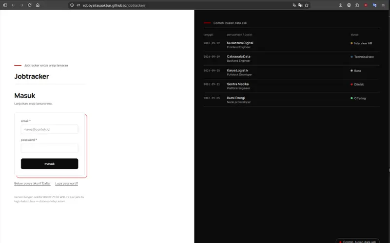
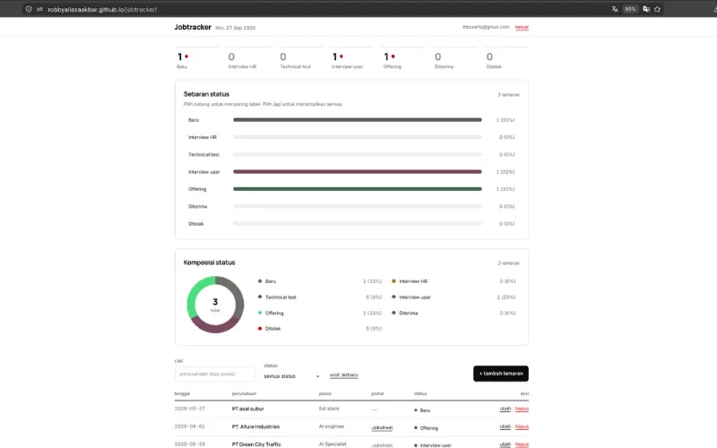
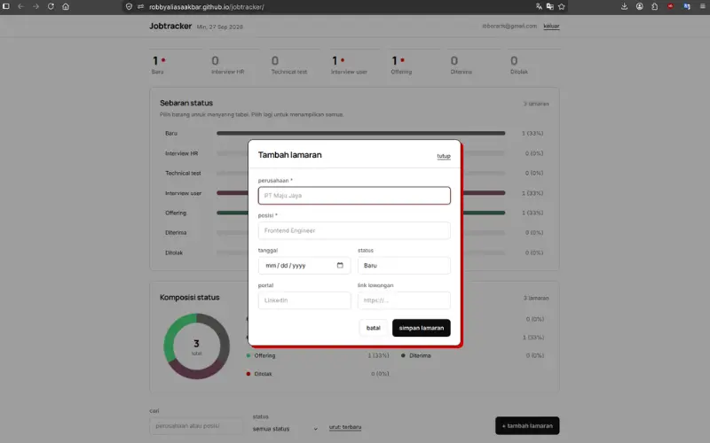
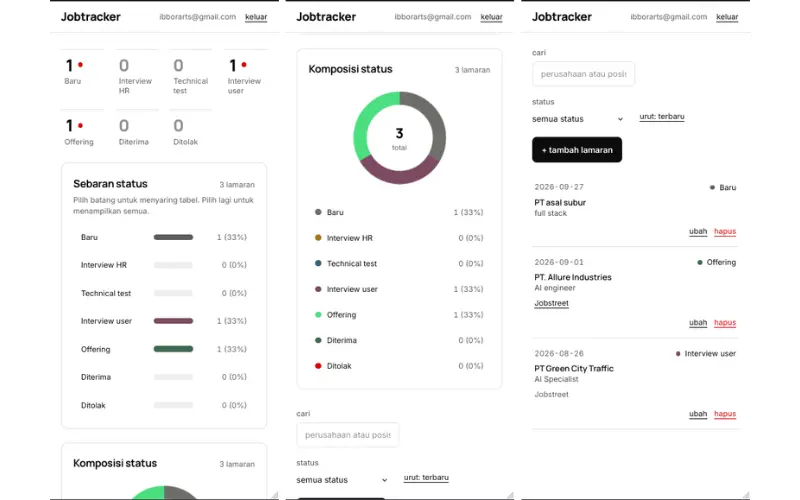
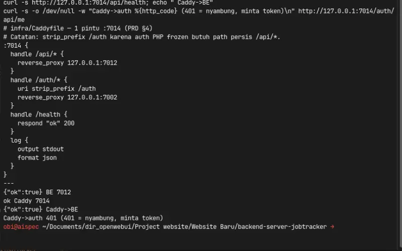
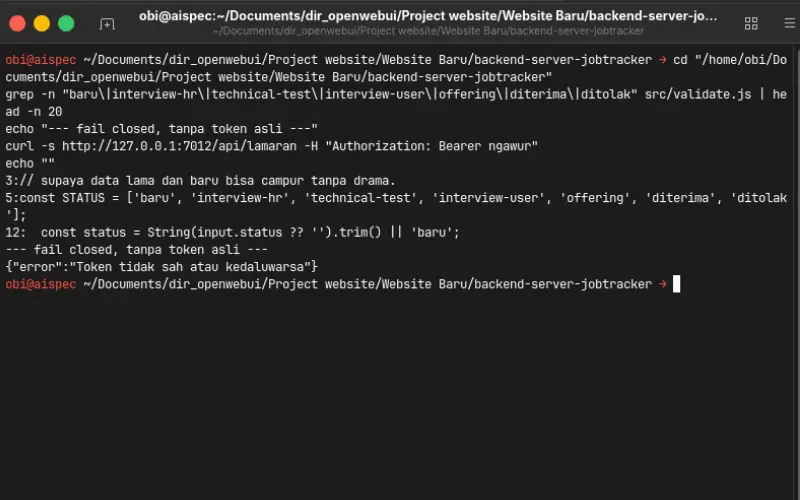
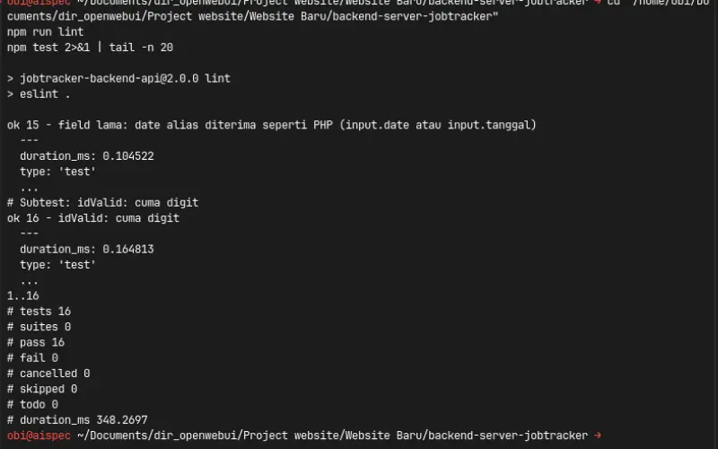
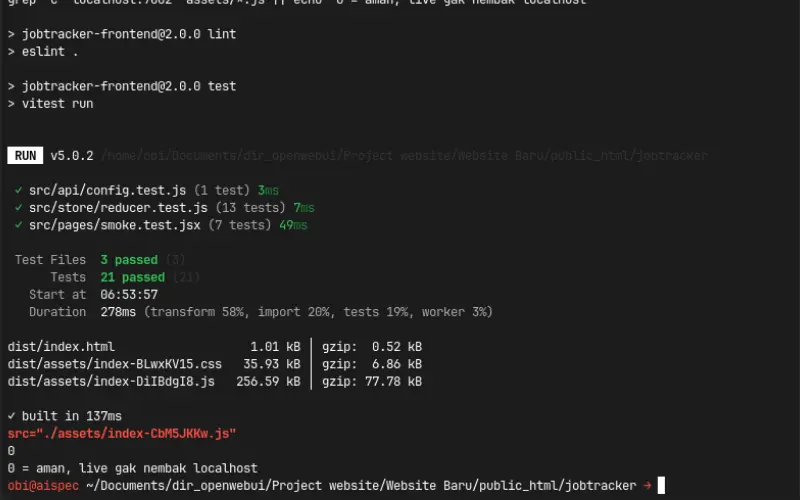

Experiment 016
Live React plus Express plus Postgres plus Caddy one door plus CI greenFrom Static Tracker to Enterprise System JobTracker EXP010 Rebuilt on a Home PC Without VPS Bills.
Can a static tracker be rebuilt to enterprise standards on a home private server with honest tradeoffs?
mimo v2.6 flash via cline cli · React plus Express plus Postgres plus Caddy · 8 verified captures · 0 VPS bill · 27 Sep 2026
My app logs in through the SAME shared auth backend as EXP 011, 012, 013, 014, and 015. I did not copy it, I reuse it. Token key jobTracker.token. Backend detail lives in EXP 011, link it. My backend only reads auth via GET /api/me, never writes.
Source Code
The source code is public. Prove it yourself.
You get the full frontend. React and Vite, ledger board, bar and donut tap to filter, and table to cards. No secrets inside. The data API lives in its own repo with its own README.
github.com/robbyaliasaakbar/robbyaliasaakbar.github.io/tree/main/jobtracker
github.com/robbyaliasaakbar/backend-api-services-jobtracker
Receipts live in both READMEs, no secrets inside. Frontend README and Backend README.
System Requirements
Live view
Modern browser + internet
Live app login
Akun auth :7002 (OTP email)
Live app jam
08.00 to 21.00 WIB
Local dev FE
Node 22+, npm 10, port 7013 kosong
Local BE
Node 22+, Docker, Postgres :5432, port 7012/7014 kosong
Funnel
Tailscale funnel :7443 to 127.0.0.1:7014
Test gate
lint 0, test hijau, build 38 modules
Model
mimo v2.6 flash via cline cli
First experiment developed with a hosted model instead of the local coder. The ledger runs on GitHub Pages, the data still lives on the home PC behind one encrypted funnel as EXP 010 through 015.
Screenshots
App First Then Terminal Green At The End
I captured eight shots in strict order: app first, then terminal, green at the end for climax. Login, dashboard, modal, and mobile, then door, contract, lint backend, and lint frontend.
Login Session - Sample Ledger Panel
login-session.webp
Dashboard - Strip Plus Bar Plus Donut
dashboard.webp
Add Modal - Solid White Plus Red Shadow
added-lamaran-form.webp
Mobile - Table To Cards
mobile-version.webp
Door - Caddy One Door Plus Health
terminal-door.webp
Contract - Seven Enum Plus Fail Closed
terminal-contract.webp
Backend - Lint Clean Plus 16 Tests
lint-backend.webp
Frontend - Lint Plus 21 Tests Plus Build
lint-frontend.webp
Live Demo
Live ledger plus home backend, no VPS bill
My ledger is still /jobtracker/, rebuilt from EXP 010. I built this experiment to prove a static tracker can run enterprise habits on a home PC. Try the app live, then compare with the terminal shots below.
My backend runs on my home PC 08.00 to 21.00 WIB. If my computer or funnel door is closed, the app shows an honest offline card, which is expected and not broken. I cleaned test rows where shown. The demo uses the live frontend and my home backend only.
For those of you unable to read this data from technical standpoint, here is the conclusion:
1. My job notebook was messy but useful, so I rebuilt it to look calm and work daily
2. You log in the same way, your old notes still fit, nothing to move by hand
3. One door for the browser, one key check, no new passwords written anywhere
4. My home computer sleeps at night, when it is off the app says so honestly
5. The move kept every row, counts match and samples match, old file kept seven days
6. Everything that broke is written here, eighteen small stories, no hidden magic
Experiment Details
Same Contract New Backbone Plus Honest Tradeoffs
This is a massive upgrade from EXP010. I kept the same shape and the same errors, then built a new backbone, one door, and green gate. Here are the five decisions I made to move a static tracker to enterprise habits on a home PC.
validate.js plus lamaran.js
My v1 vanilla app was 4 files with zero build. I wrote the v2 React app full new with 2 screens, yet the shape, 7 enum, and error messages stay plek PHP legacy (src/validate.js and src/api/lamaran.js). Because I never changed the contract, my old notes still fit and migration stays smooth.
I developed with the hosted model mimo v2.6 flash via cline cli, not local and not opencode. I led research, architecture, review, and test, while Udin typed code and suggestions.
Caddy :7014 plus funnel :7443
I put Caddy on :7014 as one door. /api goes to :7012, /auth passes to :7002 frozen, /health answers 200. One funnel on :7443 forwards to the door. I only read auth via GET /api/me, never write, and Knex never connects to auth.
My proof is infra/Caddyfile and curl to 4 endpoints. Local, funnel, and status all green, auth without token answers 401 asking for token.
migrate plus COUNT match
I back up first, then read SQLite read only from my backup, then insert to Postgres with idempotent signature (scripts/migrate-lamaran.js). COUNT matches and 5 samples match. My old SQLite file stays for 7 days after cutover.
I fixed date parity with a raw string parser for pg DATE so save and read never shift a day. I patched the parser in server and cutover together.
5 auth modes plus strip bar donut
I chose a paper token, hairlines, and one brave accent. Five auth modes, dashboard strip 7, bar, and donut tap to filter in sync, table to cards on mobile, solid modal, toast, and an offline card that says the server is sleeping.
My proof is screenshots and design-token.css. I use no icon library, no router, no heavy store, by my decision.
lint 0 plus test 21 plus build 38
I keep lint at 0, tests at 21 of 21, build 38 modules, copy dist, relative assets, and 0 localhost. CI adds a Postgres service so green means tests really ran, not fake green.
My proof is Actions YAML and logs. I keep frontend frontend.yml and backend backend.yml both green before push.
Evidence Log
Standalone Evidence Log: One Door Plus Contract Plus Green Gate
I back every claim about one door, contract, and green gate with verifiable command line outputs from 27 Sep 2026. I never show passwords or full tokens, and raw status, counts, and file listings remain exact.
E1. One Door Answers Local
ok true LocalHitting BE, Caddy, and Caddy to BE proves one door routes correctly.
curl -s http://127.0.0.1:7012/health
{"ok":true}
curl -s http://127.0.0.1:7014/health
ok
curl -s http://127.0.0.1:7014/api/health
{"ok":true}
Result: BE plus door plus door to BE all ok.
E2. Funnel Forwards Plus Auth Asks Token
401 Ask TokenHitting public funnel without token proves forwarding works and auth stays defensive.
curl -sk https://aispec.tail06293c.ts.net:7443/health
ok
curl -sk https://aispec.tail06293c.ts.net:7443/api/health
{"ok":true}
curl -sk https://aispec.tail06293c.ts.net:7443/auth/api/me
{"error":"Token tidak sah atau kedaluwarsa"}
Result: funnel to door ok, auth answers 401 asking for token.
E3. Contract Enum Plus Fail Closed
7 Enum IntactGrep proves 7 stages intact and fake token stays rejected.
grep STATUS src/validate.js
baru, interview-hr, technical-test, interview-user, offering, diterima, ditolak
curl token ngawur
{"error":"Token tidak sah atau kedaluwarsa"}
Result: identical PHP contract, fail closed without real token.
E4. Backend Green 16 Pass
16 Pass 0 FailLint clean, suite green, and date parity with PHP.
npm run lint clean 0 problems npm test 16 pass 0 fail
Result: BE green, date alias plek PHP.
E5. Frontend Green 21 Plus Build Relative
21 Passed RelativeLint, vitest, and build prove Pages ready with zero localhost.
npm run lint clean npx vitest run 3 files 21 passed npm run build 38 modules 137ms css 35.93KB js 256.59KB src="./assets/index-CbM5JKKw.js" grep localhost:7002 dist -r 0
Result: FE green, relative assets, 0 localhost safe for live.
Failure Log
Eighteen Failures Written Honestly
I logged eighteen stories, 4 near miss, and 12 UI notes. Five deep dives below, thirteen honest list after. I found three before live, one on live, and fixed all with receipts.
1. Dates Shift A Day
TZ Silent Bug DEV HIGHSymptom: Save 2026-09-26 came back as 2026-09-25. Silent, no error, only visible on read back.
Diagnosis: pg DATE became Date at midnight local, and toISOString to UTC shifted back 7 hours for WIB.
Fix: Raw string parser for type 1082 in pgtypes and same patch in cutover. Save and read shielded by integration test.
Lesson: Timezone is silent, prove with save and read, never trust local midnight.
2. Build Green But Runtime Crash
Silent Killer DEV HIGHSymptom: Build exit 0 yet warning about getToken undefined. Production screen never finished loading.
Diagnosis: AppStore called a helper never exported from auth. Exit 0 hid the broken bootstrap.
Fix: Re export getToken from auth and read warnings as errors. Bootstrap verified in browser.
Lesson: Exit 0 is not success, read warnings line by line.
3. Container Hits Itself To 503 Live Login
Localhost Trap LIVE HIGHSymptom: Live login 503. BE container shot to its own localhost, not host auth.
Diagnosis: Localhost inside container means itself, not host. Auth lives outside the container network.
Fix: Host env and compose service name for auth URL. Live login verified after restart.
Lesson: Localhost changes meaning inside containers, use explicit host names.
4. Absolute Base To 404 Blank White
Base Path PRE-LIVE HIGHSymptom: Pages showed blank white with 404 on assets. Absolute base broke on project Pages.
Diagnosis: Base /jobtracker/ expects domain root, Pages serves from sub path.
Fix: Relative base and VITE_BASE removed, assets ignored by ESLint. Relative proved safe.
Lesson: Relative base survives Pages, absolute base dies quietly.
5. CORS Plus Stale Bundle Double Trap
Dev Plus Bundle PRE-LIVE HIGHSymptom: Dev on 7013 shot funnel 7443 and got preflight without allow header. Dev also served old funnel artifact.
Diagnosis: Funnel origin not in frozen allowlist, and dev served stale bundle with embedded funnel URL.
Fix: Dev env to localhost, refuse to add origin to frozen. Restore from index template and restart. Prove with curl and grep bundle.
Lesson: Prove with outputs, never guess origin and bundle issues.
F1 DEV small: test command read as file path to plain run. Lesson: 0 run once mistaken as tested.
F4 DEV medium: event hack while context existed to rewrite. Lesson: stay with context.
F5 DEV small: unused disable twice wrong fix to remove directive. Lesson: target 0 warnings.
F6 DEV small: duplicate SampleLedger import to tidy. Side effect F7 split.
F7 DEV workflow: editor refused big file and overwrite to split AuthPage to 3 files cleaner.
F8 DEV workflow: pkill matched own shell twice to anti self pattern.
F9 DEV false alarm: parallel ls read stale to sequential check.
F10 DEV small: SQL one liner quote trap to binding.
F11 DEV small: grep handle miss to read caller router first.
F12 DEV prevented: skeleton Caddy 2 bugs to host and strip prefix before run.
F13 DEV prevented: fake green CI to add Postgres and TEST_URL.
F14 DEV workflow: long sleep hit timeout twice to split poll.
PRE-LIVE recap F16 to F18: 3 found before push, 0 users hit. If leaked: blank, no login, and wrong diagnosis.
Near miss 4: live CORS checked before push, TZ patch also in cutover, E2E account canceled to protect frozen auth, and 8 compromises openly admitted.
UI notes G1 to G12: funnel artifact rewrite, dark tone, moss fix, solid modal, hover border, paper ink stamp tokens, AuthPage REKAAN, strip 28, boxed toolbar, 500ms interactivity, sleep card, and lint test build tracking.
FAQ
Frequently Asked Questions
Is this a new login? ▼
No. I use the same shared auth as EXP 011. My old notes still open with the same key.
Did my old data move? ▼
Yes. I made a read only copy, counts match and five samples, and I kept the old file for seven days.
Why one door? ▼
I keep one address for the browser to remember. Data goes one way, auth goes another, health says ok.
Why does it sleep at night? ▼
I run it on my home PC by decision, no VPS bill. When it is off, the card is honest and data stays safe.
Why Postgres? ▼
I get real relations, safe concurrency, and VPS readiness, reuse container, zero cost.
Why so many failures? ▼
I keep eighteen on record. I found three before live, one on live, and fixed all with receipts.
Live Status
Live Status - Live Ledger, Home-PC Backend
What works now
- React ledger live /jobtracker/ with CRUD 7 stages
- Bar and donut tap to filter in sync
- Caddy one door 7014 and funnel 7443
- Postgres cutover verified with COUNT and samples
- CI green for frontend and backend
What is not production yet
- Not 24/7, local PC runs 08.00 to 21.00 WIB
- Token 1h, Postgres single container reuse
- No rate limit page yet
- Hardening is a separate project
Ledger live on GitHub Pages. Backend runs on my personal PC (funnel :7443 to Caddy :7014 to :7012 and :7002 frozen). Off means offline card, expected. Transcripts and file listing show how it works.
Disclaimer
Disclaimer - Live Ledger, Home Backend, Not Production-Hardened
Built with mimo v2.6 flash via cline cli hosted, not local and not opencode. Test rows cleaned where shown. Passwords, tokens, and OTP codes are never shown.
Shared backend: EXP 011 (:7002) · v1 story: EXP 010 (vanilla) · This: EXP 016 (v2 enterprise) · Machine: EXP 001